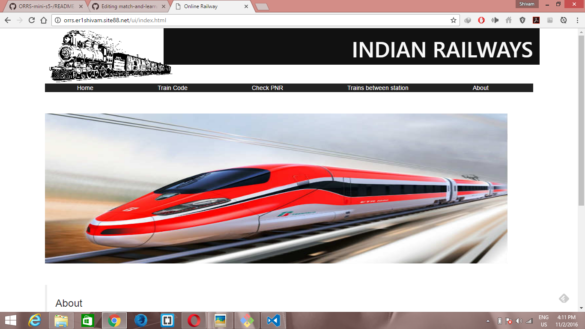
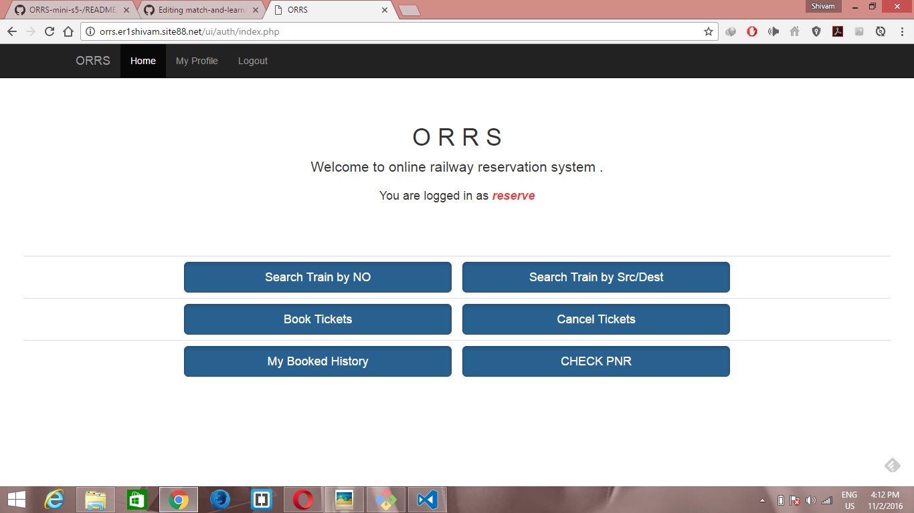

ORRS
Online Railway Reservation System
A mini project for S-5 designed during AUG-OCT of 2016.
ONLINE
Since this project start with the word 'Online' , I have taken a next step to host it online.
And the project is running successfully online ,and anyone can visit,signup, and use every functionality
of a basic User.
To visit the site Click Here ORRS
Details
This project is designed in HTML,CSS,JS AND PHP using MYSQL as its backend database.
Screenshot


In this there are basically two user groups
1) Admin
Basic functionality of Admin
-ADD a Train
-Delete a Train
-Add a Station
-Delete a Station
-Add Schedule
-Delete Schedule
2) Normal user Basic functionality of USER -Search Train by No/Src-Dest -Book Ticket -Cancel Ticket -Check his Booked History -Check PNR
NOTE
However copyright is applied but This project is open-source , so anyone interested can download or fork this project.
If you find any bug ,you can report me here er1shivam@gmail.com.
Thanks